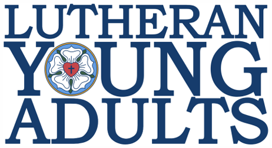

Join us for Fellowship, Food & Fun
at our very first Lutheran Young Adults gathering on June 20th, at Zion Evangelical Lutheran Church, 766 S. High St., Columbus, OH.
RSVP via the QR code
or at https://tally.so/r/Ek8QeA.